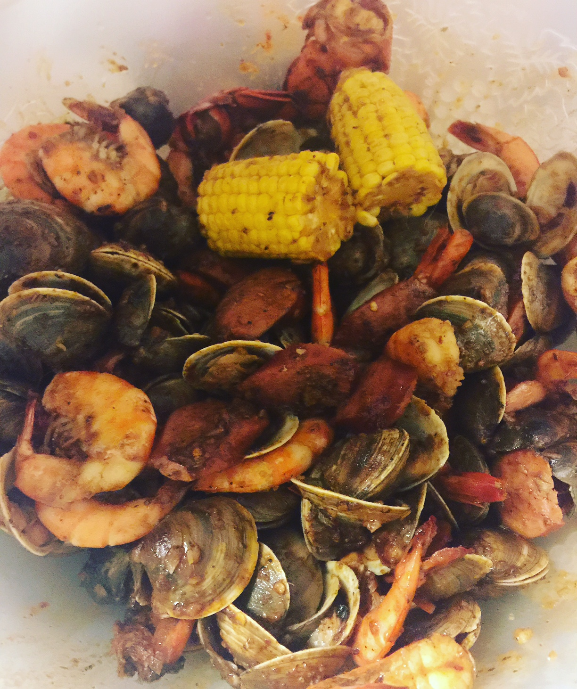
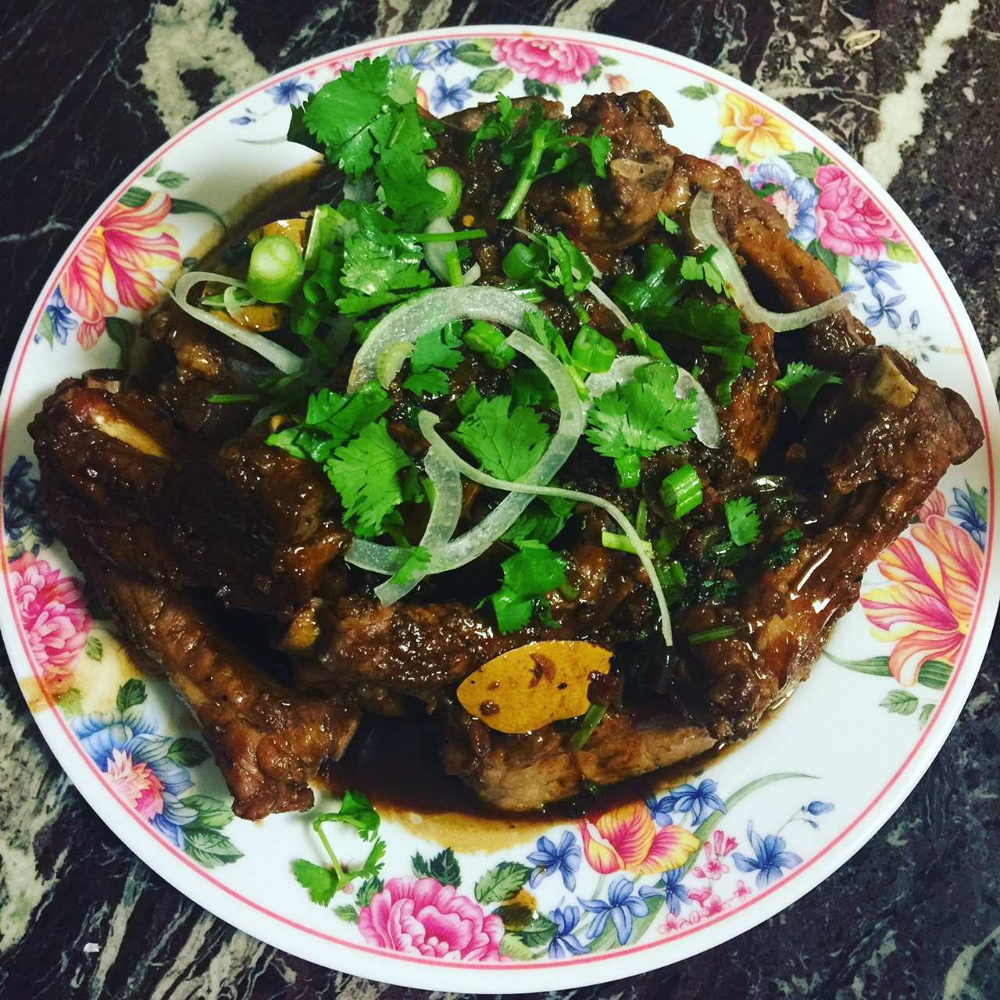
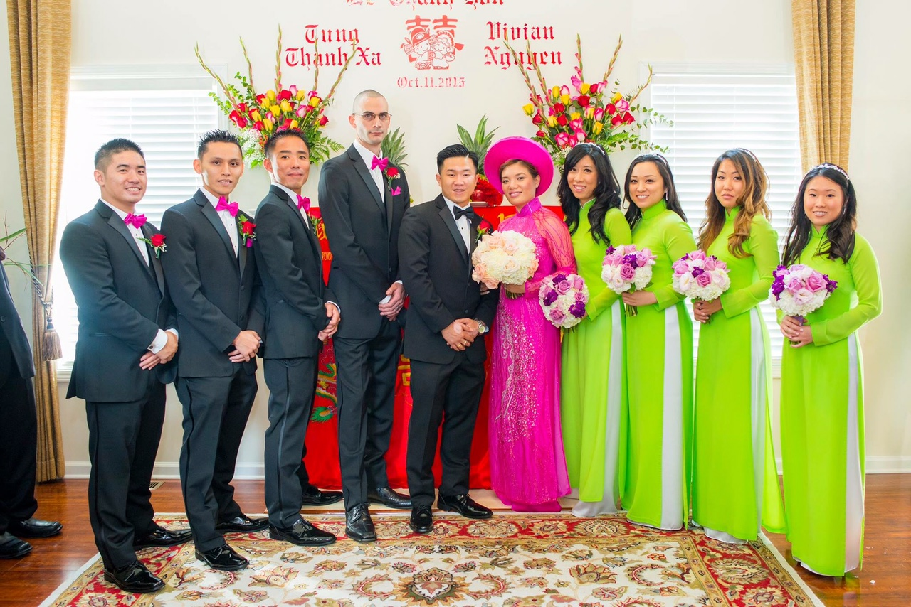

I was borned in Los Angeles but moved to Georgia when I was 4 years old. I guess I can call myself a Southern girl now. NOT! I definitely never acquired the Southern accent! I love traveling, cooking, and of course eating so having family on the West Coast definitely gives me tons of opportunities to do both!
 I graduated from Georgia State University with a Bachelors in Biology. After years of long and sleepless nights, I realized that the field wasn't for me. After 1 1 years of being in a relationship, the now-husband finally proposed. This moment definitely changed my life. I had to really think about where my life was going. I hadn't found another career that I felt I had potential for. A random Facebook Ad changed everything! It was an ad for free coding tutorials for stay-at-home women/mothers.
Those were the thoughts running through my mind. All these successful stories of others changing career later in life. It occurred to me that I can potentially start a new career and still have time for all the times I value! Remembering my Xanga days, I gotta admit I was pretty darn great at those pages. After plenty of researching and long nights reading every reviews, I decided to commit to it and register! Here I am now, embarking on yet another journey!